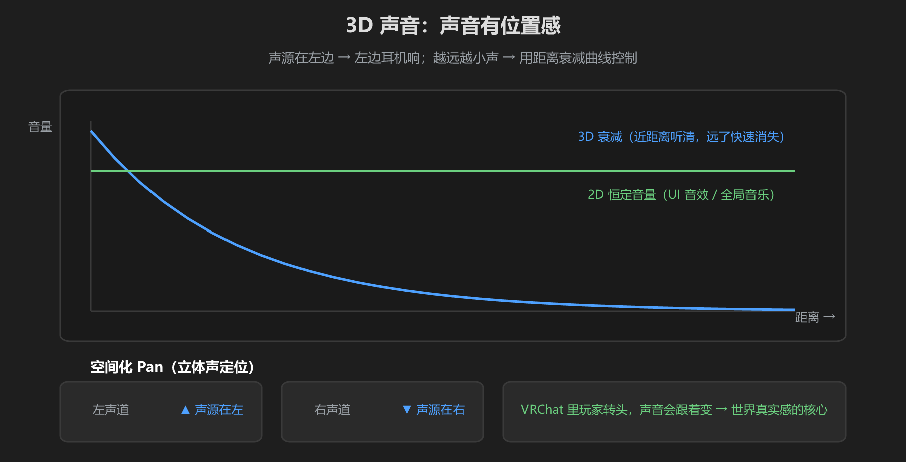
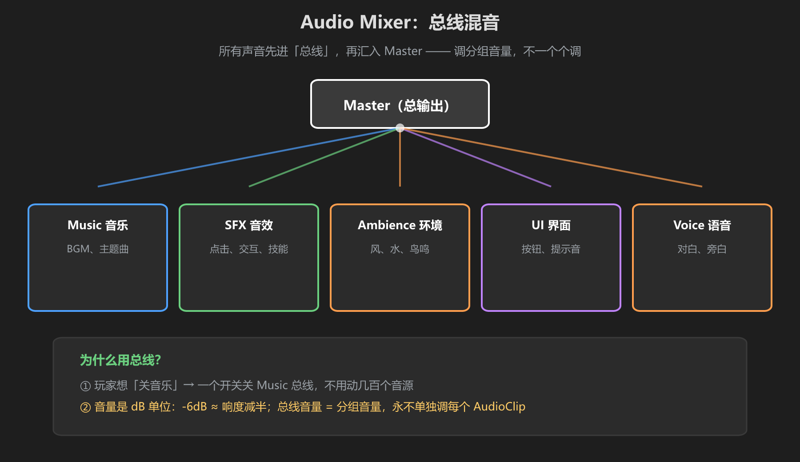
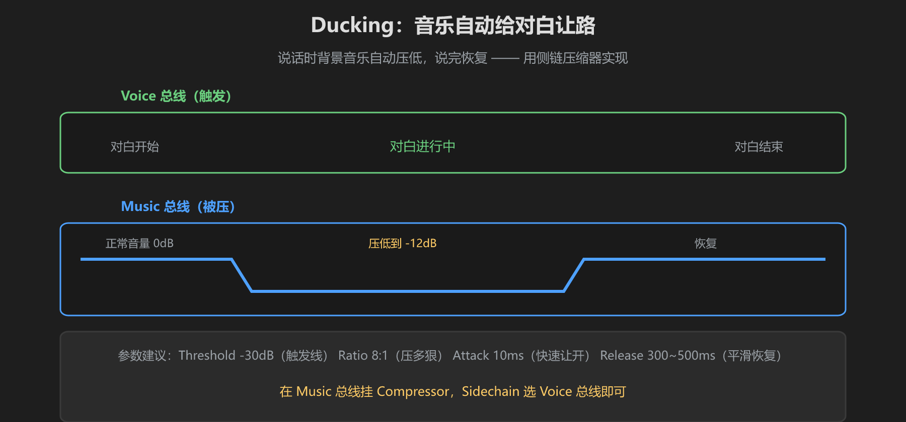

第 3 篇：3D 声音与混音 — 距离衰减、总线、Ducking
会放声音了，现在让它"像真的"：声源有位置、越远越轻，而且所有声音能分组控制。这是音频从"会响"到"好听"的关键一篇。
1. 3D 声音：位置感与距离衰减

图：3D 衰减曲线（越远越轻）+ 左右声道定位（声源在左，左耳先听到）
| 设置 | 含义 | 建议 |
|---|---|---|
| Spatial Blend | 0 = 2D 恒定，1 = 全 3D | 环境音、交互音 = 1；BGM、UI = 0 |
| Min Distance | 小于这个距离音量不再增大 | 小物体 1~3m |
| Max Distance | 超过后音量保持最小 | 篝火 10m，瀑布 30m |
| Volume Rolloff | 衰减曲线形状 | Logarithmic（对数）最自然 |
3D 声音 = VRChat 世界真实感的核心。玩家转头时声音跟着变，走近篝火声音渐强 —— 全靠 Spatial Blend = 1 + 合理的 Max Distance。
2. Audio Mixer：总线混音

图：所有声音 → 各自的总线 → Master。调分组音量，不一个个调
创建方式：Project 右键 → Create → Audio Mixer。在 Audio Mixer 窗口里：
- 建 5 条子总线：Music / SFX / Ambience / UI / Voice，全部挂到 Master 下
- 每个 AudioSource 的 Output 槽指向对应总线
- 调音量时只动总线（例如把 Music 总线 -10dB），不碰单个音源
为什么必须用总线：玩家想"关音乐"时，你只需在设置界面调 Music 总线音量 —— 而不是改几百个 AudioSource。这是职业做法。
3. Ducking：对白时音乐自动让路

图：Voice 响时，Music 总线自动压低（-12dB），说完恢复
在 Music 总线上挂 Compressor 效果器，Sidechain 指向 Voice 总线：
| 参数 | 值 | 作用 |
|---|---|---|
| Threshold | -30 dB | 对白音量超过它才触发 |
| Ratio | 8 : 1 | 压多狠（8:1 是明显闪避） |
| Attack | 10 ms | 快速让开，不拖泥带水 |
| Release | 300~500 ms | 平滑恢复，不"喘气" |
别把 Ratio 调太高、Release 调太快——音乐会出现明显"呼吸感"（pumping），比不闪避还难听。
动手：建一条总线
- 创建 Audio Mixer，加 Music 和 SFX 两条总线
- 把一个 AudioSource 的 Output 指向 Music
- 把 Music 总线音量调成 -6dB，听变化
- 试试在 Music 上挂 Compressor + Sidechain SFX：按一个按钮（SFX），音乐自己变轻
学前检查清单
- 理解 Spatial Blend、Min/Max Distance 的用途
- 建了一条总线并让音源走它
- 理解了 Ducking 的作用和参数含义